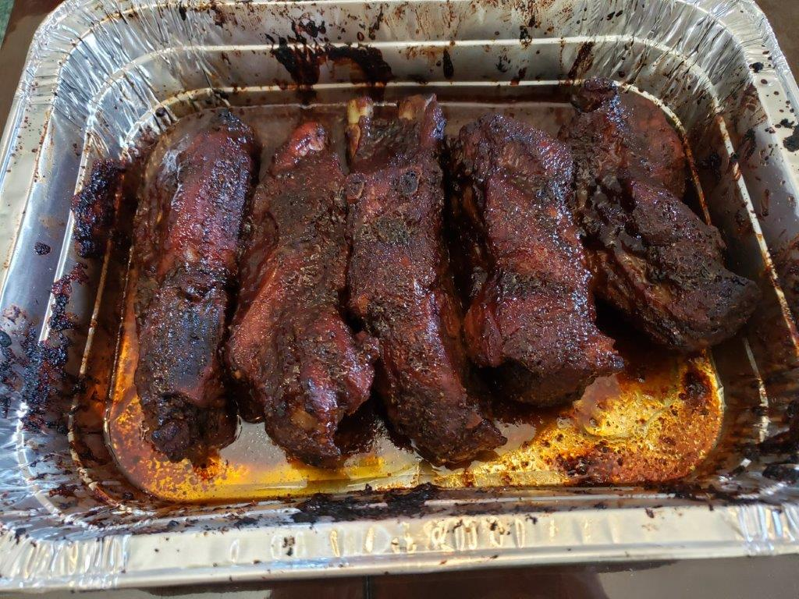

Barbeque Ribs

Ingredients:
Dry Rub:
- 1/4 cup Brown sugar
- 2 tsp Chili powder
- 2 tsp Paprika
- 1 tsp Salt
- 1 tsp Ground mustard
- 1 tsp Dried oregano
- 1/2 tsp Garlic powder
- 1/2 tsp Onion powder
- 1/4 tsp Black pepper
Other Ingredients:
- 1 rack Pork ribs
- 1 Lemon, juiced
- Barbeque sauce
Instructions:
- Combine the dry rub ingredients and set aside.
- Preheat the oven to 300 degrees Fahrenheit
- Peel the silver skin off the back of the ribs and cut the ribs into individual pieces.
- Rub ribs all over with lemon juice. Then coat ribs with dry rub.
- Place meat side down in large baking pan, & cover tightly with foil, shiny side out. Bake in the oven for 2 1/2 hours.
- Remove from oven & pour off liquid. Brush bbq sauce over all sides of the ribs. Set oven to broil and broil, uncovered, for about 5 minutes per side, watching so they don’t burn.